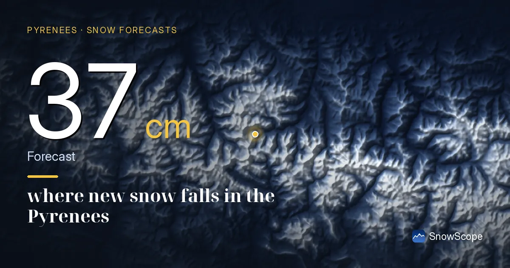

37 cm forecast: where new snow falls in the Pyrenees
Piau-Engaly will see the most snow in the Pyrenees over the next three days: 37 cm total, with 24 cm on 12 November. As the system moves through, the freezing level falls from 3320 metres to 2370 metres, bringing accumulating snow to lower elevations.
See the live snow forecast for Piau-Engaly in the SnowScope appSnow depth, powder alerts and the 3D map, free.
Where the new snow arrives
Piau-Engaly, which currently holds just 1 cm on its upper slopes, will see the most new snow across the Pyrenees: a forecast total of 37 cm. The snowfall will be distributed across the mountain, with the summit (2527 m) receiving around 6 cm and mid-elevations (2144 m) around 4 cm.
Cauterets Cirque du Lys will receive 21 cm. Spanish resorts Aramón Cerler and Boí Taüll will see 15 cm and 14 cm respectively. Only 37 resorts across the region currently hold measurable snow, down from 47 two days earlier.
| Resort | Snow depth | New snow, 72 h | Coming, next days | Top |
|---|---|---|---|---|
| Piau-Engaly | 1 cm | 0 cm | 37 cm | 2,527 m |
| Cauterets Cirque du Lys | 20 cm | 0 cm | 21 cm | 2,420 m |
| Aramón Cerler | 8 cm | 0 cm | 15 cm | 2,618 m |
| Boí Taüll | 8 cm | 0 cm | 14 cm | 2,747 m |
| Gourette | 0 cm | 0 cm | 13 cm | 2,453 m |

When it falls
The heaviest snow will fall on 12 November. At Piau-Engaly, the forecast shows 6 cm on 11 November, 24 cm on 12 November, and 7 cm on 13 November. Cauterets will follow a similar pattern: 1 cm on 11 Nov, 12 cm on 12 Nov, and 8 cm on 13 Nov.
The timing matters: on 11 November, the freezing level will be around 2730-3180 metres, so snow at base elevations will be wet or marginal. By 12 November, it drops to 2500-2940 metres, allowing consolidation across the entire mountain. On 13 November, it falls further to 2370-2480 metres, but snowfall rates will ease.

Elevation effects
The heaviest snow on 12 November will consolidate wherever the freezing level allows. The 24 cm peak at Piau-Engaly will be firm snow above 2500 metres, the forecast freezing level for that day. Below that altitude, accumulation may remain wet and slow.
At Boí Taüll, which measured 0 cm on 10 November at 2537 metres, fresh snow should reach the terrain by 13 November. Cauterets will add 21 cm to its existing 20 cm base, while Piau-Engaly will rise from 1 cm to around 38 cm.
Regional picture
The region has seen rapid snow cover loss: from 2150 km² on 8 November to 880 km² today, a dramatic retreat in just two days. By 13 November, the forecast shows around 790 km² of snow cover and 12 resorts above the snow-detection threshold.
This apparent contraction despite new snow reflects a transition: lower slopes will see wet snow or rain while only the highest peaks consolidate the new accumulation. The incoming system will reset the picture but with a narrower altitude band of skiable snow.
Forecast reliability
Model confidence in this system is good for timing and amount. The heaviest snow (24 cm on 12 November) is forecast consistently, and the totals at top resorts reflect stable atmospheric data.
The main uncertainty is the freezing level: a small temperature change shifts the snow/rain line significantly, affecting where new snow consolidates. For early season, 37 cm at Piau-Engaly and 21 cm at Cauterets would be significant accumulation—if it sticks. Beyond 13 November, we have no forecast data yet.
Tips for skiers
- Piau-Engaly and Cauterets (21 cm) will be the best bets for fresh snow. If you plan to ski, 12 November should be the priority; this is when the heaviest accumulation and coldest conditions align.
- On 12 November, head to elevations above 2500 metres for firm snow; that is the forecast freezing level. On 11 November, the freezing level is much higher (up to 3180 m), so expect wet snow at lower elevations.
- Spanish resorts Aramón Cerler and Boí Taüll will gain 15 cm and 14 cm respectively, with Boí Taüll holding higher elevation terrain (up to 2747 m) that should turn white by 13 November.
- Early-season snow is fragile. These forecasts assume the precipitation falls as snow at the predicted elevations. Warmer-than-expected conditions or stronger sun could reduce the new snow depth and durability.
- Check the official avalanche bulletin from Météo-France before venturing off-piste, especially as new snow arrives on warming slopes (11 Nov) and then to cold, steep slopes (12-13 Nov).
About these numbers
Resort snow depths are the deepest snow on the resort's upper slopes from the SnowScope snow model (about 1 km, run of 10 November); they are estimates for an area, not a measurement at one point. Station values are measurements on the date shown. Forecasts can change. Always read the official avalanche bulletin before going off-piste.
Official avalanche bulletins: Météo-France – Bulletin d'estimation du risque d'avalanche
Cite this report
For research, teaching or the press: the numbers and charts are free to reuse under CC BY 4.0 with this citation.
SnowScope (2026), 37 cm forecast: where new snow falls in the Pyrenees, https://snowscope.app/blog/en/2026/11/pyrenees-piau-engaly-snow-forecast-10-november-2026.html, accessed 2026-11-10
SnowScope (Atlas Labs). (2026, November 10). 37 cm forecast: where new snow falls in the Pyrenees. SnowScope snow reports. https://snowscope.app/blog/en/2026/11/pyrenees-piau-engaly-snow-forecast-10-november-2026.html
BibTeX
@misc{snowscope2026pyreneespiauengalysnowfo,
author = {{SnowScope (Atlas Labs)}},
title = {37 cm forecast: where new snow falls in the Pyrenees},
year = {2026},
month = nov,
howpublished = {\url{https://snowscope.app/blog/en/2026/11/pyrenees-piau-engaly-snow-forecast-10-november-2026.html}},
note = {Published 2026-11-10 11:18 UTC; accessed 2026-11-10}
}· CC BY 4.0 · Methods, data and tools →
Piau-Engaly: snow and temperature by height, this winter vs last (tools) →
Follow Piau-Engaly
Free: a message when fresh snow is coming, and the forecast every morning.
More snow reports

Pyrenees day passes from 46 EUR: six resorts in France, Spain and Andorra compared by price, then by the snow they usually have in December and January.

Freezing level reaches 3620 m on Sunday 8 November, above Aramón Cerler's 2618 m top, bringing rain-on-snow risk (forecast from 6 November data).

Freezing level reaches 3400m–3600m over the next three days, bringing rain to the snowpack from 09–11 November. Forecast from 08 November.